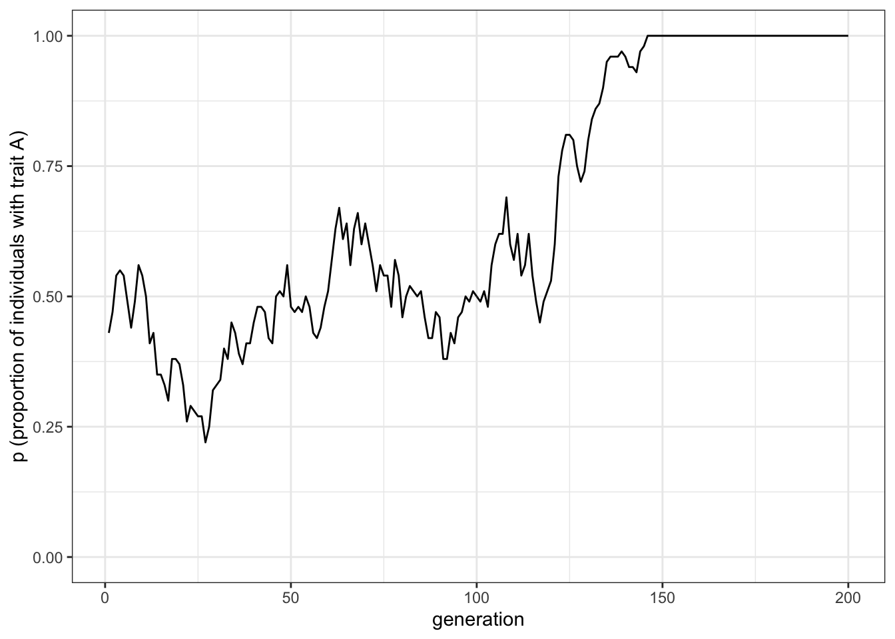
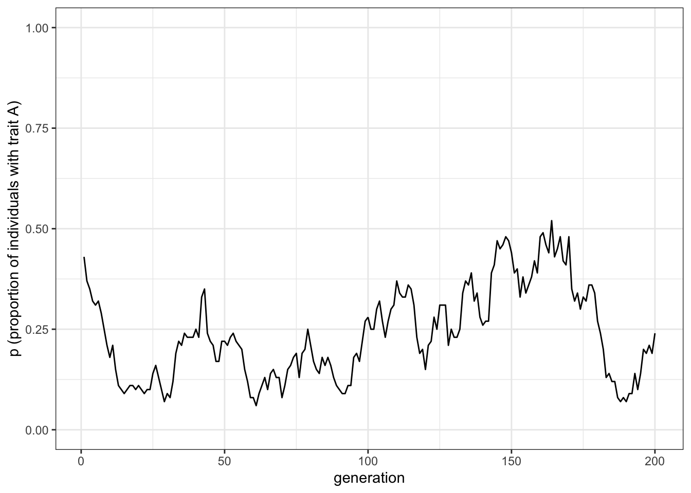
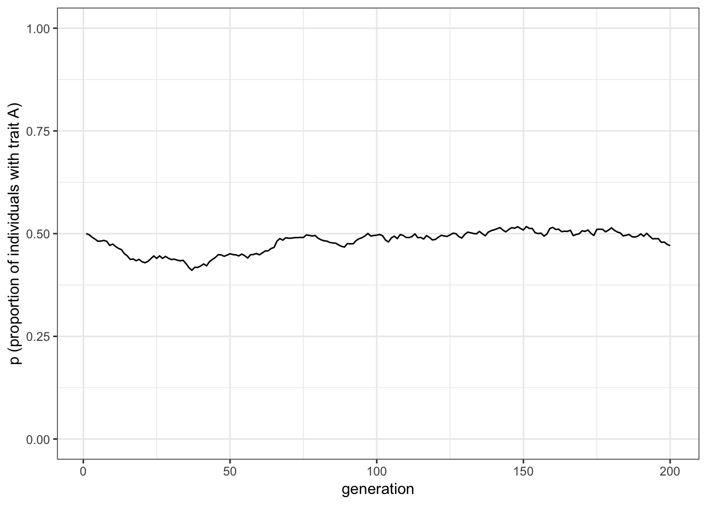
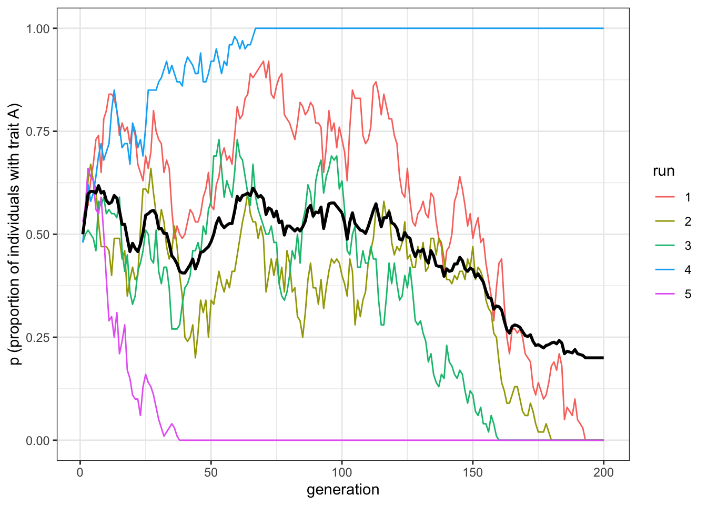
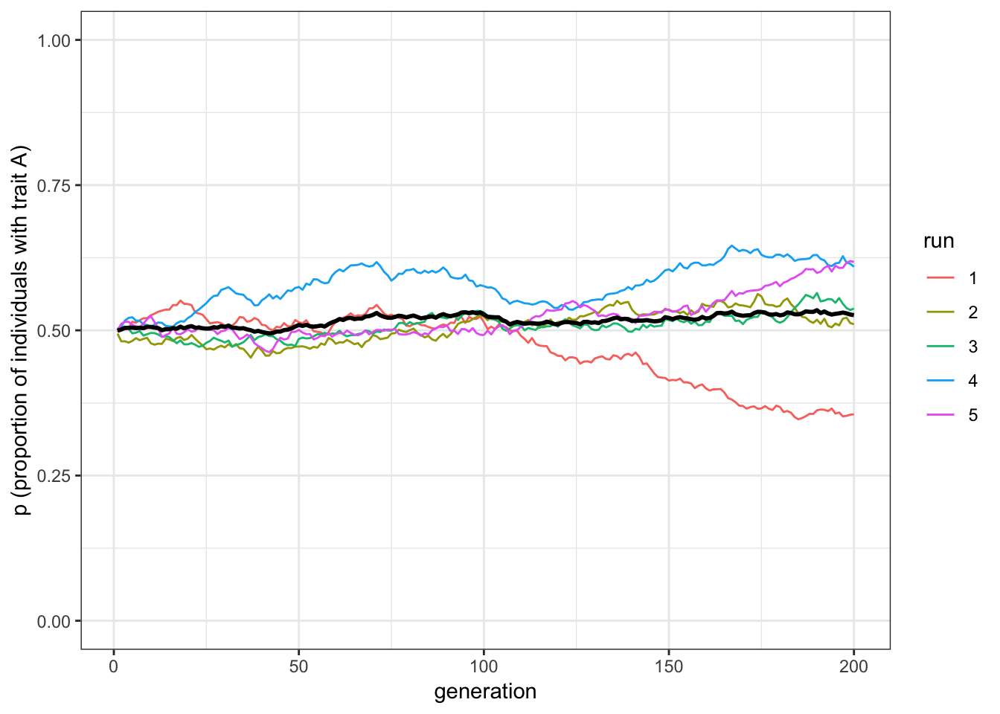
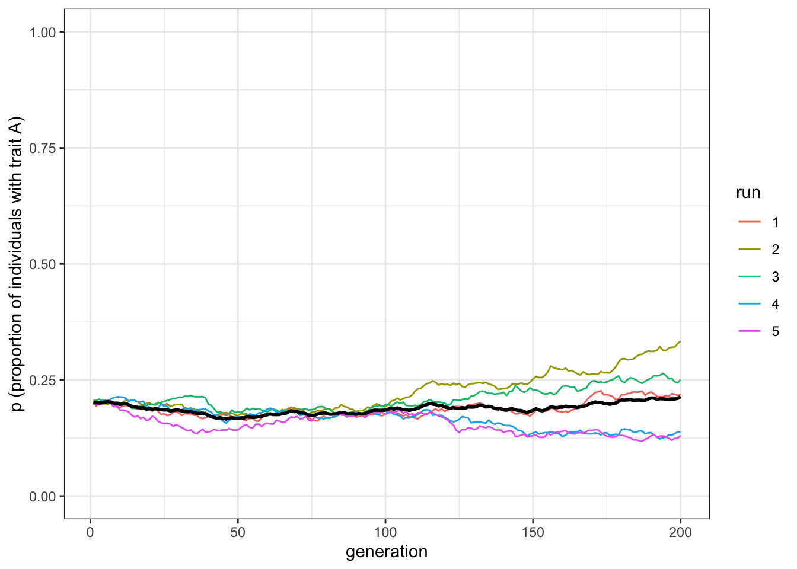
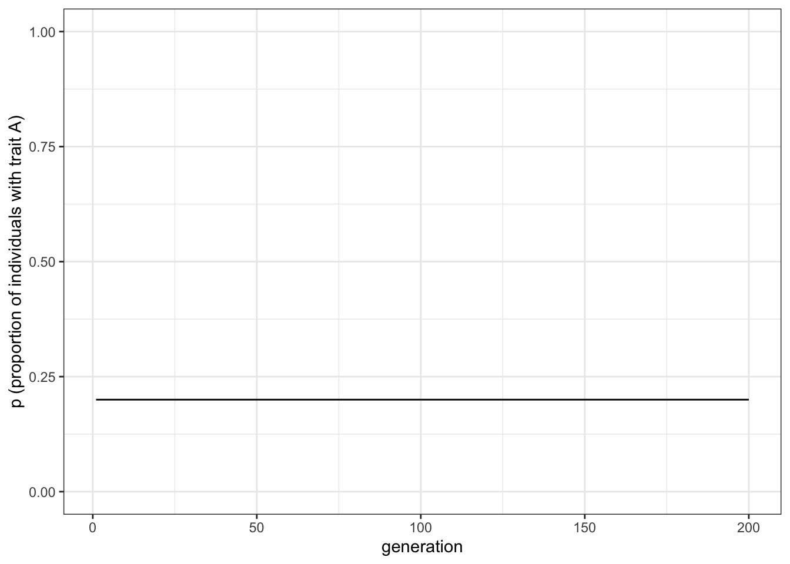

1 Unbiased transmission
Here we will simulate a case where \(N\) individuals possess each one of two mutually exclusive cultural traits, for example, preferring a vegetarian diet, which we will denote as trait \(A\), and preferring a non-vegetarian diet, denoted as trait \(B\). In each generation, all \(N\) individuals are replaced with \(N\) new individuals. Each new individual picks a member of the previous generation at random and copies their cultural trait. This is known as unbiased oblique cultural transmission: unbiased because traits are copied entirely at random. The term oblique means that members of one generation learns from those of the previous non-overlapping generation. This is different from, e.g. horizontal cultural transmission (where individuals copy members of the same generation), and vertical cultural transmission (where offspring copy their parents).
If we assume that the two cultural traits are transmitted in an unbiased way, what does that mean for the average trait frequency in the population given sufficient time? To answer this question, we are interested in tracking the proportion of individuals who possess trait \(A\) over successive generations. We will call this proportion \(p\). We could also track the proportion who possess trait \(B\), but this will always be \(1 - p\) given that the two traits are mutually exclusive. For example, if \(70\%\) of the population have trait \(A\) \((p=0.7)\), then the remaining \(30\%\) must have trait \(B\) (i.e. \(1-p=1-0.7=0.3\)).
The output of the model will be a plot showing \(p\) over all generations up to the last generation, which we will call \(t_{\text{max}}\). Generations (or time steps) are denoted by \(t\), where generation one is \(t=1\), generation two is \(t=2\), up to the last generation \(t=t_{\text{max}}\). These could correspond to biological generations, but could equally be ‘cultural generations’ (or learning episodes), which might be much shorter.
First, we need to specify the fixed parameters of the model. These are \(N\) (the number of individuals) and \(t_{\text{max}}\) (the number of generations). Let’s start with \(N=100\) and \(t_{\text{max}}=200\):
N <- 100
t_max <- 200Now we need to create our individuals. The only information we need to keep about our individuals is their cultural trait (\(A\) or \(B\)). We’ll call population the data structure containing the individuals. Initially, we will give each individual either an \(A\) or \(B\) at random, using the sample() command. The first part of the sample() command lists the elements to pick at random, in our case, the traits \(A\) and \(B\). The second part gives the number of times to pick, in our case \(N\) times, once for each individual. The final part says to replace or reuse the elements after they’ve been picked (otherwise there would only be one copy of \(A\) and one copy of \(B\), so we could only give two individuals traits before running out). There are two other lines before. First, we also need to call the tidyverse library, that we will use throughout the chapter. Second, we use the function set.seed() to make sure that the results shown in the book are the same you obtain in your session. You can try and change the seed of the random number generator (the number \(100\) has nothing special, you can replace it with any other number), and you will see the traits of the individuals will be created differently.
library(tidyverse)
set.seed(100)
population <- tibble(trait = sample(c("A", "B"), N, replace = TRUE))We can see the cultural traits of our population by simply entering its name in the R console:
population## # A tibble: 100 x 1
## trait
## <chr>
## 1 A
## 2 A
## 3 B
## 4 A
## 5 A
## 6 A
## 7 B
## 8 A
## 9 B
## 10 A
## # … with 90 more rowsAs expected, there is a single column called \(trait\) containing \(A\)s and \(B\)s. The type of the column, in this case “chr” (i.e. character) is reported below the name.
A specific individual’s trait can be retrieved using the square bracket notation in R. For example, individual 4’s trait can be retrieved by typing:
population$trait[4]## [1] "A"This should match the fourth row in the table above.
We also need a tibble to track the trait frequency \(p\) in each generation. This will have two columns with \(t_{\text{max}}\) rows, one for each generation. One is simply a counter of the generations, from 1 to \(t_{\text{max}}\). This is useful to plot the output. The other contains the \(p\) values for each generation. We’ll call this tibble output, because it is the output of the model. At this stage we don’t know what \(p\) will be in each generation, so for now let’s fill the output tibble with lots of NAs, which is R’s symbol for Not Available, or missing value. We can use the rep() (repeat) command to repeat NA \(t_{\text{max}}\) times.
We’re using NA rather than, say, zero, because zero could be misinterpreted as \(p = 0\), which would mean that all individuals have trait \(B\). This would be misleading, because at the moment we haven’t yet calculated \(p\), so it’s nonexistent, rather than zero.
output <- tibble(generation = 1:t_max, p = rep(NA, t_max))We can, however, fill in the first value of \(p\) for our already-created first generation of individuals, held in population. The command below sums the number of \(A\)s in population and divides by \(N\) to get a proportion out of 1 rather than an absolute number. It then puts this proportion in the first slot of \(p\) in output, the one for the first generation, \(t=1\). We can again write the name of the tibble, output, to see that it worked.
output$p[1] <- sum(population$trait == "A") / N
output## # A tibble: 200 x 2
## generation p
## <int> <dbl>
## 1 1 0.5
## 2 2 NA
## 3 3 NA
## 4 4 NA
## 5 5 NA
## 6 6 NA
## 7 7 NA
## 8 8 NA
## 9 9 NA
## 10 10 NA
## # … with 190 more rowsThis first \(p\) value should be approximately 0.5 (you can try by varying the seed of the random number generator): maybe not exactly, because we have a finite and relatively small population size. Analogously, flipping a coin 100 times will not always give exactly 50 heads and 50 tails. Sometimes it would give 51 heads, sometimes 52 heads, sometimes 48. Similarly, sometimes we will have 51 \(A\)s, sometimes 48, etc.
1.1 Execute generation turn-over many times
Now we need to iterate our population over \(t_{\text{max}}\) generations. In each generation, we need to:
copy the current individuals to a separate tibble called previous_population to use as demonstrators for the new individuals; this allows us to implement oblique transmission with its non-overlapping generations, rather than mixing up the generations and getting in a muddle
create a new generation of individuals, each of whose trait is picked at random from the previous_population tibble
calculate \(p\) for this new generation and store it in the appropriate slot in output
To iterate, we’ll use a for-loop, using \(t\) to track the generation. We’ve already done generation 1 so we’ll start at generation 2. The random picking of models is done with sample() again, but this time picking from the traits held in previous_population. Note that we have added comments briefly explaining what each line does. This is perhaps superfluous in a tutorial like this, but it’s always good practice. Code often gets cut-and-pasted into other places and loses its context. Explaining what each line does lets other people - and a future, forgetful you - know what’s going on.
for (t in 2:t_max) {
previous_population <- population # copy the population tibble to previous_population tibble
population <- tibble(trait = sample(previous_population$trait, N, replace = TRUE)) # randomly copy from previous generation's individuals
output$p[t] <- sum(population$trait == "A") / N # get p and put it into the output slot for this generation t
}Now we should have 200 values of \(p\) stored in output, one for each generation. Let’s plot them.
1.2 Plotting the model results
We use ggplot() to plot our data. The syntax of ggplot may be slightly obscure at the beginning, but it forces us to have a clear picture of the data before plotting them, and you will get more and more comfortable with it with time.
In the first line in the code below, we are telling ggplot that the data we want to plot are in the tibble output. Then, with the command aes() we declare the “aesthetics” of the plot, that is, how we want our data mapped in our plot. In this case, we want the values of \(p\) on the y-axis, and the values of \(generation\) on the x-axis (this is why we created before, in the tibble output, a column to keep the count of generations).
We then use geom_line(). In ggplot, “geoms” are used to declare how our plot should look. The visual representation is independent from the mapping that we decided before. The same data, with the same mapping, can be graphically represented in many different ways. In this case, we are asking ggplot to represent the data as a line. You can change geom_line() in the code below with geom_point(), and see what happens (other geoms have less obvious effects, and we will see some of them in the later chapters).
The other commands are mainly to make the plot look nicer. We want the y-axis to span all the possible values of \(p\), and we use a particular “theme” for our plot, in this case a standard theme with white background. With the command labs() we give a more informative label to the y-axis (ggplot automatically labels the axis with the name of the tibble columns that are plotted, this is good for \(generation\), but less so for \(p\)).
ggplot(data = output, aes(y = p, x = generation)) +
geom_line() +
ylim(c(0, 1)) +
theme_bw() +
labs(y = "p (proportion of individuals with trait A)")
Unbiased transmission, or random copying, is by definition random, so different runs of this simulation will generate different plots. If you rerun all the code, trying different seeds of the random number generator, you’ll get something different again. It probably starts off hovering around 0.5 (the approximate starting value of \(p\)), and might go to 0 or 1 at some point. At \(p = 0\) there are no \(A\)s and every individual possesses \(B\). At \(p = 1\) there are no \(B\)s and every individual possesses \(A\). This is a typical feature of cultural drift, analogous to genetic drift: in small populations, with no selection or other directional processes operating, traits can be lost purely by chance.
1.3 Write a function to wrap the model code
Ideally we would like to repeat the simulation to explore this idea in more detail, perhaps changing some of the parameters. For example, if we increase \(N\), are we more or less likely to lose one of the traits? With our code scattered about in chunks, it is hard to quickly repeat the simulation. Instead we can wrap it all up in a function, like so:
unbiased_transmission_1 <- function(N, t_max) {
population <- tibble(trait = sample(c("A", "B"), N, replace = TRUE))
output <- tibble(generation = 1:t_max, p = rep(NA, t_max))
output$p[1] <- sum(population$trait == "A") / N
for (t in 2:t_max) {
previous_population <- population # copy individuals to previous_population tibble
population <- tibble(trait = sample(previous_population$trait, N, replace = TRUE))
# randomly copy from previous generation
output$p[t] <- sum(population$trait == "A") / N # get p and put it into output slot for this generation t
}
output
}This is just all of the code snippets that we already ran above, but all within a function with parameters \(N\) and \(t_{\text{max}}\) as arguments to the function. In addition, unbiased_transmission_1() ends with the line output. This means that this tibble will be exported from the function when it is run. This can be useful for storing data from simulations wrapped in functions, otherwise that data is lost after the function is executed. In the function call below, the raw data from the simulation is put into data_model, as a record of what happened.
Nothing will happen when you run the above code, because all you’ve done is define the function, not actually run it. The point is that we can now call the function in one go, easily changing the values of \(N\) and \(t_{\text{max}}\). Let’s try first with the same values of \(N\) and \(t_{\text{max}}\) as before, and save the output from the simulation into data_model, as a record of what happened.
data_model <- unbiased_transmission_1(N = 100, t_max = 200)We need to also write another function to plot the data, so we do not need to rewrite all the plotting instruction each time. Whereas it may look unpractical now, it is convenient to keep separate the function that runs the simulation and the function that plots the data for various reasons. First, with more complicated models, we do not want to rerun a simulation only because we want to change some detail in the plot. Second, it makes conceptually sense to keep separated the raw output of the model from the various ways we can visualise it, or the further analysis we want to perform on it. The code is identical to what we already wrote:
plot_single_run <- function(data_model) {
ggplot(data = data_model, aes(y = p, x = generation)) +
geom_line() +
ylim(c(0, 1)) +
theme_bw() +
labs(y = "p (proportion of individuals with trait A)")
}At this point, we can visualise the results:
plot_single_run(data_model)
Now let’s try changing the parameters. We can call the simulation and the plotting functions together. The following code reruns and plots the simulation with a much larger \(N\).
data_model <- unbiased_transmission_1(N = 10000, t_max = 200)
plot_single_run(data_model)
You should see much less fluctuation. Rarely in a population of \(N = 10000\) will either trait go to fixation.
Wrapping a simulation in a function like this is good because we can easily re-run it with just a single command. However, it’s a bit laborious to manually re-run it. Say we wanted to re-run the simulation 10 times with the same parameter values to see how many times \(A\) goes to fixation, and how many times \(B\) goes to fixation. Currently, we’d have to manually run the unbiased_transmission_1() function 10 times and record somewhere else what happened in each run. It would be better to automatically re-run the simulation several times and plot each run as a separate line on the same plot. We could also add a line showing the mean value of \(p\) across all runs.
1.4 Run several independent simulations and plot their results
Let’s use a new parameter \(r_{\text{max}}\) to specify the number of independent runs, and use another for-loop to cycle over the \(r_{\text{max}}\) runs. Let’s rewrite the unbiased_transmission_1() function to handle multiple runs.
unbiased_transmission_2 <- function(N, t_max, r_max) {
output <- tibble(generation = rep(1:t_max, r_max), p = rep(NA, t_max * r_max), run = as.factor(rep(1:r_max, each = t_max))) # create the output tibble
for (r in 1:r_max) { # for each run
population <- tibble(trait = sample(c("A", "B"), N, replace = TRUE))
# create first generation
output[output$generation == 1 & output$run == r, ]$p <- sum(population$trait == "A") / N # add first generation's p for run r
for (t in 2:t_max) {
previous_population <- population # copy individuals to previous_population tibble
population <- tibble(trait = sample(previous_population$trait, N, replace = TRUE))
# randomly copy from previous generation
output[output$generation == t & output$run == r, ]$p <- sum(population$trait == "A") / N # get p and put it into output slot for this generation t and run r
}
}
output # export data from function
}There are a few changes here. First, we need a different output tibble, because we need to store data for all the runs. For that, we initialise the same \(generation\) and \(p\) columns as before, but with space for all the runs. \(generation\) is now built by repeating the count of each generation for \(r_{\text{max}}\) times, and \(p\) is simply NA repeated for all generations, for all runs. We need a new column called \(run\), that keeps track of which run are the data in the other two columns. Notice that the definition of \(run\) is preceded by as.factor(). This specifies the type of the data, a “factor” in this case, and it serves the purpose of making explicit that, even if different runs are labeled with numbers (run 1, 2, 3, etc.), this should not be intended literally: the numbers, in this case, are just names for the runs, and there is not any special meaning in them. Runs could have been called with letters, or any other label you can think of.
Whereas this does not make any difference when running the simulation, it would create problems when plotting the data, as ggplot would not plot the runs as separate entities, but it would presuppose they are ordered according to their number, and plot something that is not what we want (you can try by yourself modifying the definition of output). This is a good example of how it is important to have a clear understanding of your data before trying to plot or analyse them.
We then set up our \(r\) loop, which executes once for each run. The code is mostly the same as before, except that we now use the [output$generation == t & output$run == r, ] notation to put \(p\) into the right place in output.
The plotting function is also changed to handle multiple runs:
plot_multiple_runs <- function(data_model) {
ggplot(data = data_model, aes(y = p, x = generation)) +
geom_line(aes(colour = run)) +
stat_summary(fun.y = mean, geom = "line", size = 1) +
ylim(c(0, 1)) +
theme_bw() +
labs(y = "p (proportion of individuals with trait A)")
}To understand how it works, we need to explain the general functioning of ggplot. If you remember, aes() specifies the “aesthetics”, or how the data are mapped in the plot, and it is independent from all possible visual representations of the same mapping, or “geoms”. If we declare a specific mapping when we call ggplot(), this mapping will be applied to all geoms we call after. Alternatively, we can specify the mapping in the geom itself. For example this code:
ggplot(data = output, aes(y = p, x = generation)) +
geom_line()is equivalent to this one:
ggplot(data = output) +
geom_line(aes(y = p, x = generation))However, we can use this property to make more complex plots. The plot in our function has a first geom, geom_line(), that inherits the mapping as specified in the call to ggplot() and has, in addition, a new mapping, colour = run, which says to plot separately, with a different colour, the data identified by different runs After that, there is the command stat_summary(), used to calculate the mean of all runs, that only inherits the mapping specified in the ggplot() call. If in the aesthetic of stat_summary() we had also specified colour = run, it would separate the data by run, and it would calculate the mean of each run, which would be the trend itself. For this reason, we did not put colour = run in the ggplot() call. As above, there are various ways to obtain the same result. This code:
ggplot(data = output) +
geom_line(aes(y = p, x = generation, colour = run)) +
stat_summary(aes(y = p, x = generation), fun.y = mean, geom = "line", size = 1)is equivalent to the code we wrapped in the function. However, our code is clearer, as it makes evident what is the global mapping, and what is the mapping specific to the various visual representations.
Finally, stat_summary() is a generic ggplot function, that can be used to plot different statistics to summarise our data. In this case, we want to calculate the mean on the data mapped in \(y\), that we want to plot them with a line, and that we want this line to be thicker than the lines for the single runs. The default line size for geom_line is 0.5, so size = 1 makes the line that represents the mean of the runs thicker.
Let’s now run the function and plot the results:
data_model <- unbiased_transmission_2(N = 100, t_max = 200, r_max = 5)
plot_multiple_runs(data_model)
You should be able to see five independent runs of our simulation shown as regular thin lines, along with a thicker line showing the mean of these lines. Some runs have probably gone to 0 or 1, and the mean should be somewhere in between. The data is stored in data_model, which we can inspect by writing its name.
data_model## # A tibble: 1,000 x 3
## generation p run
## <int> <dbl> <fct>
## 1 1 0.55 1
## 2 2 0.59 1
## 3 3 0.66 1
## 4 4 0.6 1
## 5 5 0.62 1
## 6 6 0.59 1
## 7 7 0.63 1
## 8 8 0.64 1
## 9 9 0.68 1
## 10 10 0.77 1
## # … with 990 more rowsNow let’s run the updated unbiased_transmission_2() model with \(N = 10000\), to compare with \(N = 100\).
data_model <- unbiased_transmission_2(N = 10000, t_max = 200, r_max = 5)
plot_multiple_runs(data_model)
The mean line should be almost exactly at \(p = 0.5\) now, with the five independent runs fairly close to it.
1.5 Varying initial conditions
Let’s add one final modification. So far the starting frequencies of \(A\) and \(B\) have been the same, roughly 0.5 each. But what if we were to start at different initial frequencies of \(A\) and \(B\)? Say, \(p = 0.2\) or \(p = 0.9\)? Would unbiased transmission keep \(p\) at these initial values, or would it go to \(p = 0.5\) as we have found so far?
To find out, we can add another parameter, \(p_0\), which specifies the initial probability of drawing an \(A\) rather than a \(B\) in the first generation. Previously this was always \(p_0 = 0.5\), but in the new function below we add it to the sample() function to weight the initial allocation of traits in \(t = 1\).
unbiased_transmission_3 <- function(N, p_0, t_max, r_max) {
output <- tibble(generation = rep(1:t_max, r_max), p = rep(NA, t_max * r_max), run = as.factor(rep(1:r_max, each = t_max)))
for (r in 1:r_max) {
population <- tibble(trait = sample(c("A", "B"), N, replace = TRUE, prob = c(p_0, 1 - p_0)))
# create first generation
output[output$generation == 1 & output$run == r, ]$p <- sum(population$trait == "A") / N # add first generation's p for run r
for (t in 2:t_max) {
previous_population <- population # copy individuals to previous_population tibble
population <- tibble(trait = sample(previous_population$trait, N, replace = TRUE))
# randomly copy from previous generation
output[output$generation == t & output$run == r, ]$p <- sum(population$trait == "A") / N # get p and put it into output slot for this generation t and run r
}
}
output # export data from function
}The only change here is the addition of \(p_0\) as a definable parameter for the function, and the prob argument in the sample() command. The prob argument gives the probability of picking each option, in our case \(A\) and \(B\), in the first generation. The probability of \(A\) is now \(p_0\), and the probability of \(B\) is now \(1 - p_0\). We can use the same plotting function as before to visualise the result. Let’s see what happens with a different value of \(p_0\).
data_model <- unbiased_transmission_3(N = 10000, p_0 = 0.2, t_max = 200, r_max = 5)
plot_multiple_runs(data_model)
With \(p_0 = 0.2\), trait frequencies stay at \(p = 0.2\). Unbiased transmission is truly non-directional: it maintains trait frequencies at whatever they were in the previous generation, barring random fluctuations caused by small population sizes.
1.6 Summary of the model
Even this extremely simple model provides some valuable insights. First, unbiased transmission does not in itself change trait frequencies. As long as populations are large, trait frequencies remain the same.
Second, the smaller the population size, the more likely traits are to be lost by chance. This is a basic insight from population genetics, known there as genetic drift, but it can also be applied to cultural evolution. Many studies have tested (and some supported) the idea that population size and other demographic factors can shape cultural diversity.
Furthermore, generating expectations about cultural change under simple assumptions like random cultural drift can be useful for detecting non-random patterns like selection: if we don’t have a baseline, we won’t know selection or other directional processes when we see them.
In Model 1 we have introduced several programming techniques that will be useful in later models. We’ve seen how to use tibbles to hold characteristics of individuals and the outputs of simulations, how to use loops to cycle through generations and simulation runs, how to use sample() to pick randomly from sets of elements, how to wrap simulations in functions to easily re-run them with different parameter values, and how to use ggplot() to plot the results of simulations.
1.7 Analytical appendix
If \(p\) is the frequency of \(A\) in one generation, we are interested in calculating \(p'\), the frequency of \(A\) in the next generation under the assumption of unbiased transmission. Each new individual in the next generation picks a demonstrator at random from among the previous generation. The demonstrator will have \(A\) with probability \(p\). The frequency of \(A\) in the next generation, then, is simply the frequency of \(A\) in the previous generation:
\[p' = p \hspace{30 mm}(1.1)\]
Equation 1.1 simply says that under unbiased transmission there is no change in \(p\) over time. If, as we assumed above, the initial value of \(p\) in a particular population is \(p_0\), then the equilibrium value of \(p\), \(p^*\), at which there is no change in \(p\) over time, is just \(p_0\).
We can plot this recursion, to recreate the final simulation plot above:
p_0 <- 0.2
t_max <- 200
pop_analytical <- tibble(p = rep(NA, t_max), generation = 1:t_max)
pop_analytical$p[1] <- p_0
for (i in 2:t_max) {
pop_analytical$p[i] <- pop_analytical$p[i - 1]
}
ggplot(data = pop_analytical, aes(y = p, x = generation)) +
geom_line() +
ylim(c(0, 1)) +
theme_bw() +
labs(y = "p (proportion of individuals with trait A)")
Don’t worry, it gets more complicated than this in later chapters. The key point here is that analytical (or deterministic) models assume infinite populations (note there is no \(N\) in the above recursion) and no stochasticity. Simulations with very large populations should give the same results as analytical models. Basically, the closer we can get in stochastic models to the assumption of infinite populations, the closer the match to infinite-population deterministic models. Deterministic models give the ideal case; stochastic models permit more realistic dynamics based on finite populations.
More generally, creating deterministic recursion-based models can be a good way of verifying simulation models, and vice versa: if the same dynamics occur in both individuals-based and recursion-based models, then we can be more confident that those dynamics are genuine and not the result of a programming error or mathematical mistake.